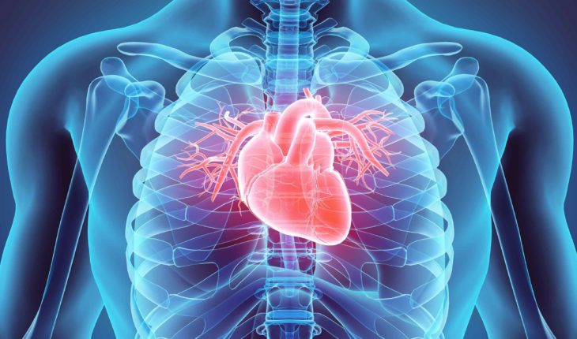
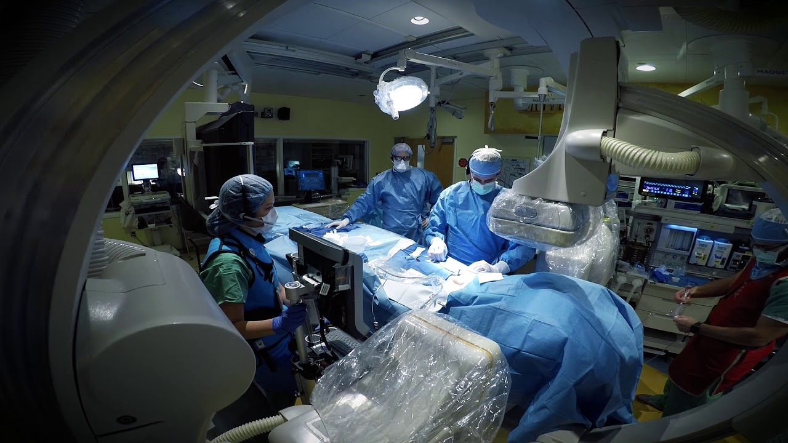
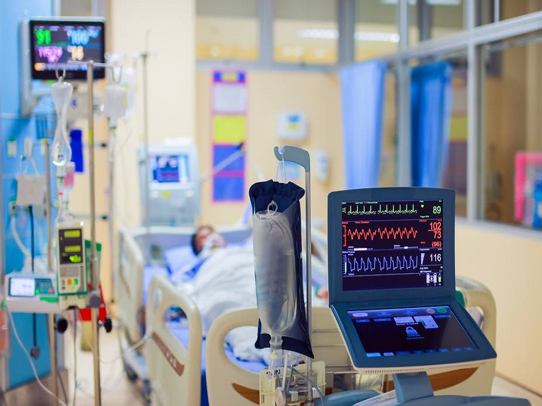

<!DOCTYPE htm1>
<htm1>

    <head>
        <meta charsetset="utf-8">
        <meta name="description" content="Welcome To My website">
        <link rel="preconnect" href="https://fonts.googleapis.com">
        <link rel="preconnect" href="https://fonts.gstatic.com" crossorigin>
        <link href="https://fonts.googleapis.com/css2?family=Cairo:wght@300;400&family=Open+Sans:wght@300&display=swap"
            rel="stylesheet">
        <title>قسم القلب &#8211; مستشفى مصر الدولي</title>
        <style>
            body {
                margin: 0;
                font-family: 'Cairo', sans-serif;
                scroll-behavior: smooth;
            }

            .containr {
                text-align: end
            }

            p {
                font-family: system-ui;
            }

            h1 {
                color: red;
            }


            .tit h1 {
                text-align: center;
                color: white;
                background-color: rgb(0, 81, 255);
                background-repeat: no-repeat;
                background-size: cover;
                background-position: center top;
                margin: -10px;
                padding: 60px;
                margin-bottom: 15px;
            }

            a {
                text-decoration: none;
                color: white;

            }

            /*--header--*/

            header {
                height: 100px;
                display: flex;
                flex-direction: row-reverse;
                align-items: center;
                padding: 20px;

            }

            header>* {
                text-align: center;
                margin-right: 30px;
                font-weight: bold;
            }

            header a {
                color: blue;
                margin-right: 50px;
            }


            .button {
                position: relative;
                background-color: blue;
                color: white;
                width: 130px;
                height: 130px;
                overflow: hidden;
            }

            .overlay {
                position: absolute;
                top: 0;
                left: -100%;
                width: 100%;
                height: 100%;
                background-color: rgba(0 0 0 / 10%);
                transition: .4s;
            }

            .button:hover .overlay {
                left: 0;
            }


            header span a {
                color: red;
            }

            /*--footer--*/

            footer {
                display: flex;
                justify-content: space-evenly;
                background-color: black;
                margin-top: 20px;
                height: 500px;
            }

            footer div {
                display: flex;
                flex-direction: column;
                justify-content: center;
                align-items: center;
            }

            footer div>* {
                margin: 20px;
            }

            footer div:nth-child(2) {
                align-items: flex-end;
            }
        </style>
    </head>

    <body>
        <header>


            


            <a href="index.html">الرئيسية</a>
            <a href="we.html">من نحن</a>
            <a href="department.html" style="color: red;">اقسامنا الطبية</a>
            <a href="">اتصل بنا</a>
            <a href="Hospital.html">التسجيل</a>


        </header>

        <br>
        <!-- ------------------------------------------------------------------------------------------- -->
        <div class="tit">
            <h1> <bdi>القلب</bdi> - اقسامنا الطبية</h1>
        </div>
        <!-- ------------------------------------------------------------------------------------------- -->
        <br> <br> <br>


        <div class="containr">

            
            <div class="content">
                <h1> امراض القلب </h1>
                <p>القلب والأوعية الدموية
                    أمراض القلب

                    يقدم قسم أمراض القلب في مستشفي مصر الدولي أحدث الابتكارات في رعاية القلب للمرضى من جميع الأعمار.
                    يقدم قسم أمراض القلب الحلول الطبية لجميع أنواع الأمراض المتعلقة بالقلب والدورة الدموية. يتم تقديم
                    التشخيص والعلاجات الطبية للمشكلات الصحية مثل قصور القلب وأمراض القلب الخلقية والعديد من الاضطرابات
                    الأخرى.

                    تلبية لاحتياجات مرضى القلب ، سهلت مستشفي مصر الدولي الخدمات بواسطة أطباء القلب ذوي الخبرة العالية
                    والتكنولوجيا المتقدمة. يتم توفير الخدمات المتطورة لضمان جودة الرعاية للمرضى بتكلفة مناسبة. يتم
                    الاختبار لتقييم مشاكل القلب المختلفة. يحتوي مختبر الفيزيولوجيا الكهربية في قسم أمراض القلب مستشفي
                    مصر الدولي على خدمات متطورة و عالية الجودة للتشخيص وكذلك علاج حالات ضربات القلب غير المنتظمة.

                    حقق قسم أمراض القلب في مستشفي مصر الدولي مكانة مرموقة في الحلول الجراحية والطبية الشاملة لجميع أنواع
                    أمراض القلب والرئتين والأوعية الدموية في أي فئة عمرية من المولود الجديد إلى كبار السن.


                    كونها مركزًا شاملاً للتميز ، فإنها تجذب أفضل العقول الجراحية والطبية التي تعمل كفريق موحد لتقديم
                    رعاية القلب والرئة بأعلى المعايير المهنية لعدد كبير من المرضى الذين يعانون من أمراض القلب أو الرئة.
                </p> <br>

                
                <h1> وحده القلب </h1>
                <h2> التشخيص القلبي </h2>
                <p> إيكو* </P>
                <p> ETT* </P>
                <p> هولتر * </p>
                <p> إيكو عبر المريء * </P>
                <p> إيكو عبر الصدر * </P>
                <p> إيكو لقياس إجهاد القلب * </P>
                <p> اختبار إمالة الرأس لأعلى * </P>
                <p> تصوير الأوعية المقطعية * </P>
                <br>
                <p>*وحدات القسطرة
                    تتميز وحدة القسطرة لدينا بأحدث آلات تصوير الأوعية الدموية المعروفة في جميع أنحاء صناعة الرعاية
                    الصحية لجودة الصورة المتميزة ، وجرعة الأشعة السينية المنخفضة لكل من المريض والموظفين ، وانخفاض تكلفة
                    الإجراءات
                    وحدة القسطرة هو معمل يجري الاختبارات والإجراءات التي تقيِّم كفاءة القلب. أثناء قسطرة القلب ، يتم
                    إدخال قسطرة (أنبوب مرن يدخل من خلال فتحة ضيقة في تجويف الجسم لإزالة السوائل) - تشمل الإجراءات
                    والاختبارات (إجراء يتم لتسجيل النشاط الكهربائي للقلب) ، تصوير الأوعية الدموية (عملية تتم باستخدام
                    الأشعة السينية للعثور على الانسداد في الشرايين) ، وزرع أجهزة تنظيم ضربات القلب. على عكس العمليات
                    التي تتم في غرفة العمليات ، سوف تكون مستيقظًا طوال مدة الإجراء. </P>
                <br>
                
                <h1> العنايه المركزه للقلب </h1>
                <p> image-20160331-28462-qliwnl-1
                    توفر وحدة العناية المركزة للقلب على مدار 24 ساعة رعاية مخصصة ومستمرة للمرضى المصابين بأمراض خطيرة و
                    الذين يحتاجون إلى دعم معقد متعدد الأعضاء. تحتوي الوحدة على 18 سريرًا ، عشرة منها في غرف فردية ، مع
                    غرفة عزل تنفسية متطورة ومخصصة.

                    مستشفى مصر الدولي هو أكبر مقدم رعاية حرجة خاصة في الجيزة-مصر. يعمل في وحدة العناية المركزة فريق مجهز
                    تجهيزا عالميا ومتعدد التخصصات من الخبراء الاستشاريين ، المقيمين في الرعاية الحرجة ، وممرضات العناية
                    المركزة ، والصيادلة ، وأخصائي العلاج الطبيعي ، وأخصائي التغذية ، والممرضات ، والمتخصصون في إدارة
                    الألم الحاد.


                    يمكن للمرضى في وحدة العناية المركزة لدينا الوصول على مدار 24 ساعة إلى التهوية المتقدمة وأنظمة مراقبة
                    الدورة الدموية المستمرة وطرق مختلفة من العلاج للمشاكل الكلوية ، بالإضافة إلى قسم الأشعة الحديث
                    والفعال ، وعند الاقتضاء ، يتم الإحالة إلى مستشارون من مجموعتنا من التخصصات الطبية والجراحية.

                    لمزيد من المعلومات حول أقسام المستشفى برجاء الاتصال بنا على الخط الساخن : 16010 </p>
            </div><br>
            <br>


            <footer>
                <div>
                    <h2>اتصل بنا</h2>
                    
                    <p>
                        ش12 السراى ميدان فيني الدقي ، الجيزه<br> قريب من فندق وكازينو شيراتون القاهرة
                    </p>
                </div>
                <div>

                    <a href="we.html">من نحن</a>
                    <a href="department.html">اقسامنا الطبية</a>
                    <a href="">اخر الاخبار</a>
                    <a href="">اتصل بنا</a>


                </div>
                <div>
                    
                    
                </div>
            </footer>
    </body>
</htm1>